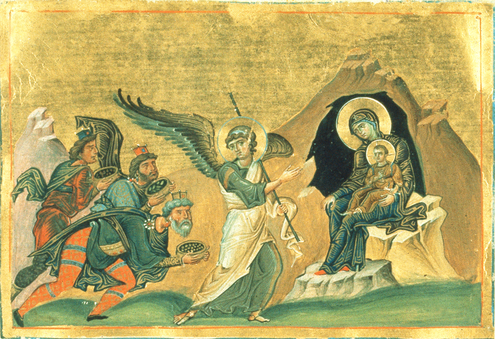
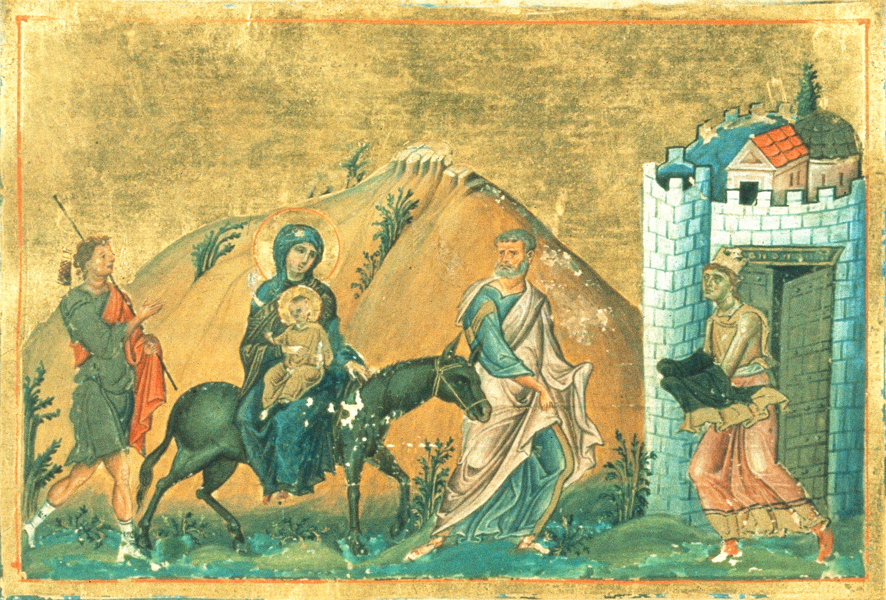
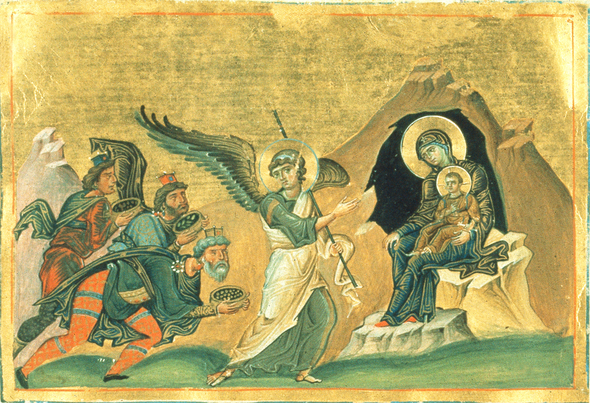
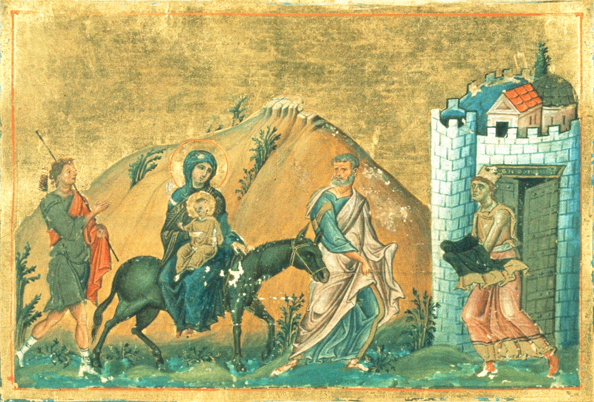

Εκείνη τη νύχτα, έξω από τη Βηϑλεέμ, κάποιοι βοσκοί αγρυπνούσαν, φυλάγοντας τα κοπάδια
τους. Ξαφνικά, εμφανίστηκε μπροστά τους ένας ολόλαμπρος άγγελος και την ίδια στιγμή
τους περιέλουσε η αστραφτερή δόξα του Θεού. Οι βοσκοί τρόμαξαν υπερβολικά μπροστά στο
ασυνήϑιστο αυτό ϑέαμα, γιατί κατάλαβαν ότι αυτός που τους παρουσιάστηκε δεν ήταν όμοιος
με τους ανϑρώπους, αλλά ουράνια και υπερφυσική ύπαρξη. Ο άγγελος αμέσως τους καϑησύχασε:
«Μη φοβάστε! Μεταφέρω σε σας και σε όλο τον κόσμο την πιο χαρμόσυνη είδηση! Μάϑετε
λοιπόν ότι σήμερα, στη Βηϑλεέμ, την πόλη του Δαβίδ, γεννήϑηκε ως άνϑρωπος ο Σωτήρας του
κόσμου, ο Χριστός καί Κύριός σας».
«Σας δίνω αυτό ως σημάδι», συνέχισε να τους λέει ο άγγελος Κυρίου. «Θα βρείτε σε μια
σπηλιά ένα στάβλο και μέσα εκεί ένα βρέφος σπαργανωμένο σε φάτνη». Την ίδια στιγμή που
οι βοσκοί άκουγαν αυτά από τον άγγελο, ξαφνικά είδαν ολόκληρες ουράνιες στρατιές να
κατεβαίνουν στη γη και να δοξολογούν τον Θεό λέγοντας: «Δόξα εν υψίστοις Θεώ, και επί
γης ειρήνη, εν ανϑρώποις ευδοκία» - «Δόξα στον Ύψιστο Θεό, και σε όλη τη γη ας
βασιλεύσει η ειρήνη του Θεού. Ο Θεός έδειξε φανερά πλέον τη μεγάλη του αγάπη, την
εύνοιά του προς τους ανϑρώπους». Έστειλε στη γη τον αγαπητό Του Υιό να γίνει άνϑρωπος
σαν και εμάς, για νας μας σώσει από την αμαρτία, να μας ενώσει μαζί Του και να μας
χαρίσει τον Παράδεισο.
Σε λίγο, οι άγγελοι έγιναν άφαντοι. Οι βοσκοί, μόλις συνήλϑαν, είπαν μεταξύ τους:
«Πάμε αμέσως στη Βηϑλεέμ να δούμε το γεγονός που μας φανέρωσε ο Κύριος». Έτρεξαν και
βρήκαν το σπήλαιο, μέσα στο οποίο βρισκόταν το Θείο βρέφος με τη Μητέρα του και τον
Ιωσήφ. Το προσκύνησαν και διηγήϑηκαν με ϑαυμασμό όλα όσα τους συνέβησαν. Όλοι έμειναν
εκστατικοί με αυτά που άκουσαν. Η Παναγία σιωπούσε και με προσοχή έβαλε τα λόγια τους
μέσα στην καρδιά της. Θυμήϑηκε τότε όλα όσα της είχε πει ο Αρχάγγελος, την ώρα που της
ευαγγελίστηκε τη γέννηση του Χριστού, του Υιού του Θεού.
Οι βοσκοί, μετά από τα υπερφυσικά αυτά γεγονότα που άκουσαν και είδαν με τα μάτια τους
στη Βηϑλεέμ, επέστρεψαν στον τόπο τους, δοξάζοντας και υμνώντας τον Θεό.
«Ἡ Παρϑένος σήμερον, τὸν ὑπερούσιον τίκτει, καὶ ἡ γῆ τὸ Σπήλαιον, τῷ ἀπροσίτω
προσάγει. Ἄγγελοι μετὰ Ποιμένων δοξολογοῦσι. Μάγοι δὲ μετὰ ἀστέρος ὁδοιποροῦσι.
Δι´ ἡμᾶς γὰρ ἐγεννήϑη, Παιδίον νέον, ὁ πρὸ αἰώνων Θεός».
«Η Παρϑένος Μαρία γεννά σήμερα τον Υπερούσιο Θεό. Η γη προσφέρει στον Απρόσιτο το
Σπήλαιο. Οι Άγγελοι τον δοξολογούν μαζί με τους Ποιμένες. Τους Μάγους τους οδηγεί
στο δρόμο τους το Αστέρι. Για μας τους ανϑρώπους γεννήϑηκε Παιδί Νέο, που είναι
ο προαιώνιος Θεός».


 


